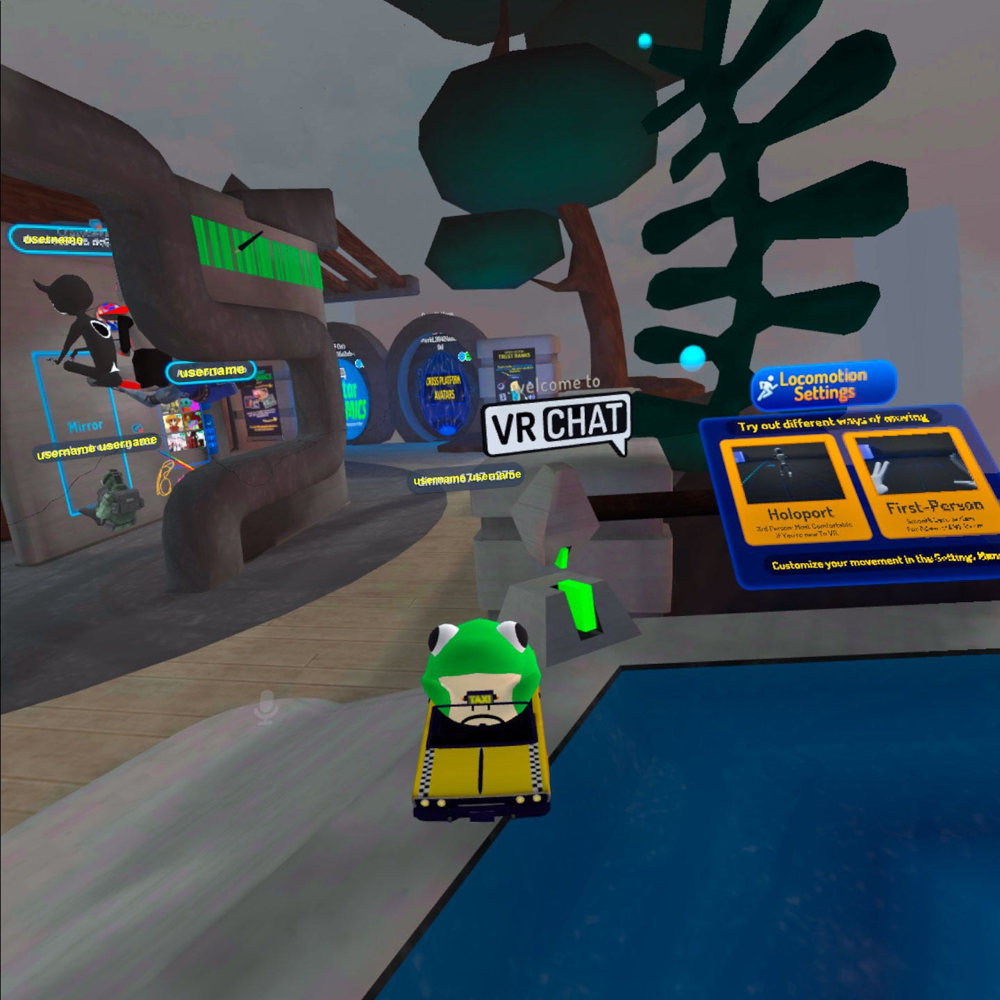
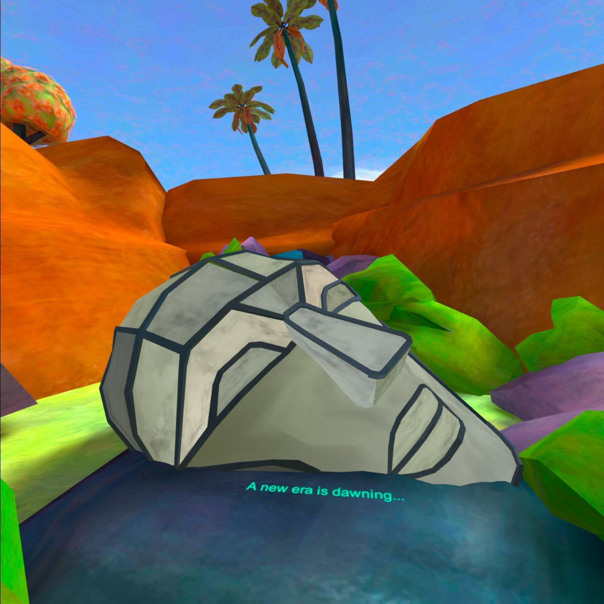
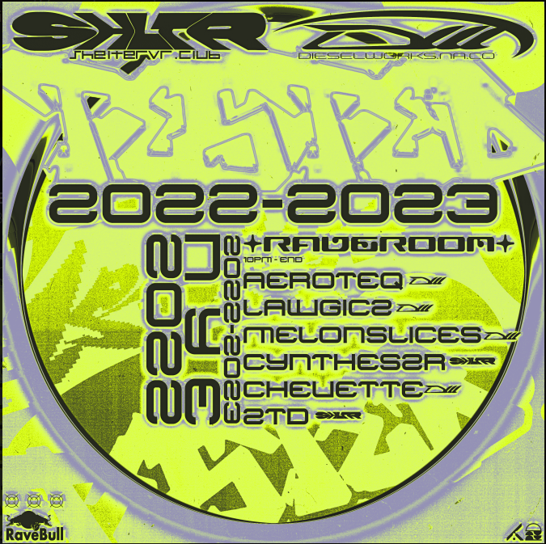
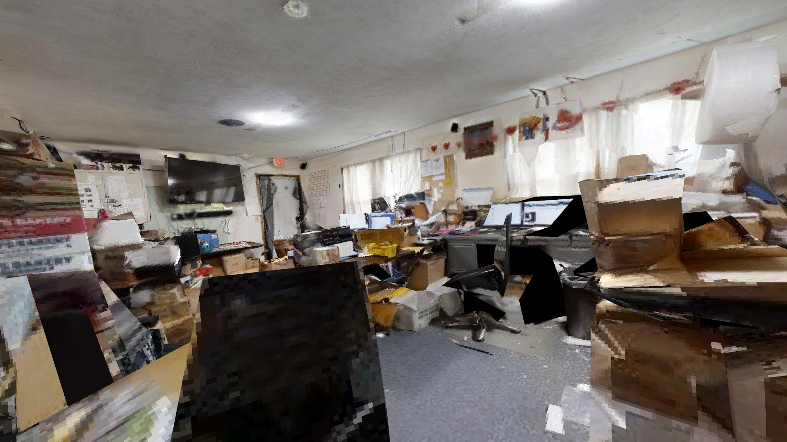
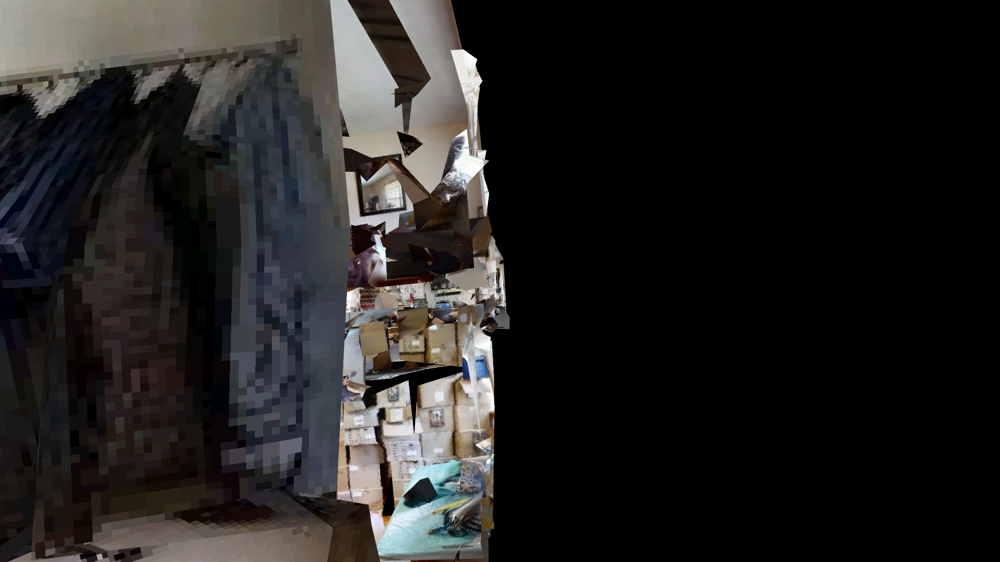
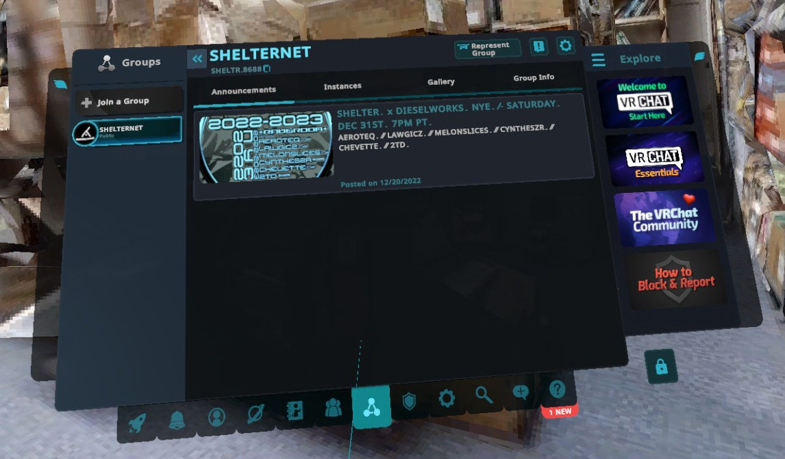
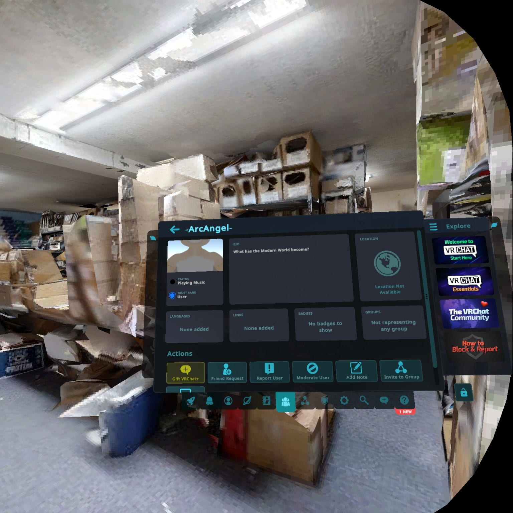
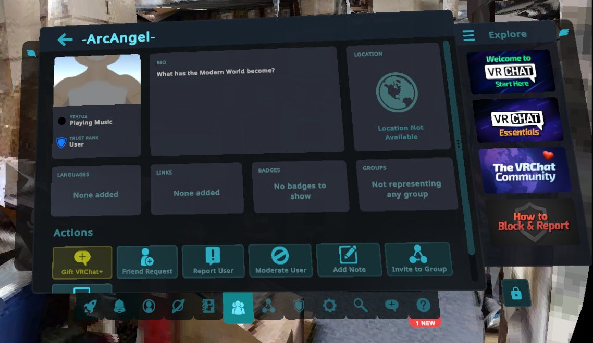

I had no New Years Eve plans this year; my wife was on a trip, my initial plans for the week fell through, I made plans for New Years Day and figured that was enough. It is okay to not be super social during a global pandemic, I decided, even if that pandemic will probably last the rest of our lives.
Still, it occurred to me maybe it would be fun to try out VRChat sometime in the evening. I booted up my headset early in the evening and verified VRChat worked; when 11 PM came, I logged on. I figured one hour would be enough time to figure out how to join an instance.
Spoilers: It was not.

I actually like VR. Or I did at one time, and whenever I can actually get into VR and find something to experience I enjoy myself, but that's somehow become harder now than it was in 2016. In 2016 VR was a series of tantalizing, incomplete tech demos. Today VR is… actually just that same set of tantalizing, incomplete tech demos. Half Life Alyx came out, and Mare¹, so that's cool. Mostly it's the same stuff though, but harder to run because the market has fragmented and some hardware doesn't work as well as it once did.
VRChat is a tantalizing, incomplete tech demo that has actual people living in it. I'm sure you were there gawking from the sidelines last year when mainstream news became obsessed with Facebook's breathless announcements that the "metaverse" would soon become the entire digital world, and then became obsessed with the world's universal mockery and disgust of that same "metaverse", once we saw Facebook's actual product. What was weird about that whole thing was that Facebook was talking about the metaverse in the future tense, but the thing Facebook promised as the future has existed, for years, not just like conceptual antecedents like Habitat or Second Life, or dead services like AltSpace VR (I actually really liked AltSpace VR) but a working, living, actively-in-use service running on Facebook's own VR headsets. It's VRChat. It does everything Facebook promised "Horizon Worlds" will someday do and then some.
One of the things that made people like me react so negatively to Horizon Worlds was that it was too clean. Everything was corporate and sterile, every bit of friction removed even if that meant literally taking away your legs, all rendered in a joyless cartoon style that made everything look like an advertisement. If you have a long history on the Internet, or if you read the cyberpunk books the word "metaverse" evokes, you probably kind of want something that has a little bit of a feeling of being handmade and scrappy. You want a metaverse with some broken image icons, maybe a bit of Z-fighting. VRChat is the metaverse with broken image icons, metaphorically. It also definitely has Z-fighting, literally. Where Facebook's 3D-avatar chat program (sorry, metaverse) feels like it completely lacks the human element, VRChat is all human element.
This feeling is made possible by the fact that VRChat is very heavily focused on user-generated everything; user-generated content, user-created worlds, user-organized communities. As I've written before I don't think the word "metaverse" should apply to any single company's proprietary chat program, since that word inherently implies cross-vendor interoperability and freedom, but VRChat gets a lot closer to the ideal than it would otherwise simply by its choice of authoring tools: Unity. It just uses Unity. Everything you see in VRChat, every world, every backdrop, every avatar, was created in Unity, the currently-universal standard tool for ordinary game development. This means the amount of user freedom is enormously higher on VRChat than on Horizon Worlds, but also critically means nobody on VRChat is truly locked in. I'd be really nervous to make content for something like Horizon or Dreams, because everything I make is tied to their servers and how it's used, or for that matter monetized, will always be the company's choice first and mine second. But anyone who has made a space for VRChat just uploaded a Unity file, which means they can take their ball and go home anytime they want. They could take their content and reuse it in a video game of their own design. They could even take their chat area and create a tiny "metaverse" of their own, assuming they can create their own global VoIP, object persistence and synchronization client and network infrastructure².
So VRChat is pretty great, except for one drawback: It is basically impossible to step into a public VRChat space for any length of time without someone trying to sexually assault your avatar. Which is. A pretty big drawback. Kind of hard to ignore. VRChat's moderation problems are enormous and legendary³. When I first used VRChat around like… early 2017? It consisted of some company-created bland spaces and some random user content in a disorganized pile; the only consistent way to save an avatar across boots of the program, unless you manually configured Unity files outside the program, was to visit (sighs) "Trap-chan's avatar mall". I signed on, floundered in the lobby trying to figure out how to connect with a friend, and then someone came over and tried to hump my avatar while their friends laughed. When I returned to VRChat a few months ago I found a pleasant tutorial, a developed avatar-saving and friend-tracking system, and some minimal company-created nexus spaces that consist entirely of jump-pads to attractive, pleasant user-created spaces and user-created avatars. I picked out some nice avatars, explored a z-fighting waterfall, a user who in violation of both the TOS and the headset manufacturer's health and safety recommendations was definitely 12 approached me and got me to help him figure out the mobility settings, and I saw bunch of cool furries and a dude whose avatar was just a frog driving a tiny taxi. Then someone came over and tried to hump my avatar while their friends laughed.

So: VRChat is a fully-functional, early-internet-feeling, potentially-great VR whiteboard with visible scars from repeated attempts at 4chan takeover and which feels fundamentally unsafe to exist in. Given this, I was shocked when I started looking at VRChat again to discover there's large, vibrant communities of mature, chill people making shockingly cool Internet art on it. How do they do this when the base community is a sewer?
The answer turns out to be simple: They hide.
Basically everyone you'd want to talk to on VRChat, in fact as far as I can tell the majority of the site, is hiding. I got an invite to a discord full of extremely nice furries, and this lead to an open invite to a recurring event where a bunch of nice furries stand around and hold totally normal house parties in alien nightmare geometries and/or modernist homes floating in voids⁴. Once people started showing up to these the social circle proved to be pretty big, and there are about a zillion of these social circles. You just have to have an in. You're on a Discord or something, you find out what time stuff is happening, you've pre-set up some people from the Discord on your friends list, and once people are online you tap someone who's already in the space with a Request Invite and they invite you in. There is a way to make a URL that links someone into a VRChat space, and you could IM that to someone or post it publicly. But no one does this. Even in an IM, URLs are reusable and therefore, I guess, unsafe. So everything is obsessively focused on the invite request followed by the invite. The way they make sure people are cool is that every person who enters the space was personally invited by someone already known to be cool.
This will be relevant in the story I'm about to tell. You can't just enter a VRChat space. Even events intended to be public involve misdirection, Discords pointing to other Discords, and fliers with coded language and implied access mechanisms. I think of the elaborate rituals gay subcultures used in eighteenth-century cruising routes to ensure the person they were propositioning was a fellow queer and not a police informant, except instead of trying to solicit gay sex, they are trying to have a normal human interaction. Maybe some of them have gay sex afterward, I don't know. It doesn't seem to be the focus.
So it's New Years' Eve. I have access to a Discord of nice furries, but when I pop in I can't seem to reach anyone‚ probably because they're either on some other time zone or (of course) already in VRChat. No worry; there's a channel where a bot, injected from some other corner of the "known cool" shadow community of VRChat, is spewing out dozens and dozens of high-quality flier JPEGs for NYE parties. A single screenshot of this channel would give you an immediate idea what this was like, but out of an abundance of caution about the fact I'm talking in a semi-public place about a community that's plainly going to lengths to keep itself semi-private I'm not going to post any screenshots of the Discord parts of my adventure here. However, here's one flier to give you a sense.

Imagine several dozen images like this, with an especially cute one featuring the girls from Dragon Maid waving a sake bottle while yelling loudly over fancy photoshopped text promising a cosplay contest. You can imagine this immediately. You've seen this genre of graphic design. It's a flier. It's essentially the same as real objects you've seen except it's designed to be distributed as a JPEG instead of printed. There's one other difference though. Although this is an advertisement, it's designed to be copypasted and reuploaded and shared, it does not anywhere explain to you how to get in to the party. It is an abstraction of an advertisement, it tells you a thing exists but not how to get it.
There's a URL at the top of that flier. It takes you to a similarly arms-length website, showing a full-page background video of a rave-looking party and linking an invite to a Discord ("JOIN. US."), a Patreon ("SUPPORT."), a Twitter ("SOCIALIZE)", and a YouTube ("EXPERIENCE."). The Twitter simply links back to the Discord. On New Years Eve I did join this Discord, and was let into one of those standard Discord landing-pad channels with over two thousand people, people constantly leaving and joining and almost no traffic except a frequently-reposted emote of a dog saying "Sup?".
About half an hour before I landed in this channel, someone had asked "so, just request an invite from the bot?" and got the immediate reply "Yes!". Sorry, I asked, which bot? I never got a reply. I brought the Discord back up the next day and I think I worked out, although this is speculation, that what I should have done was ignored the text introductions channel, hopped into the voice channel, and following this breadcrumb trail from secret furry Discord to website to Twitter to non-secret VR club discord to VR club discord voice channel someone would have let me into the actual VR club. But this did not happen on this night.
This was not my evening's first attempt to get into one of the VR parties from the fliers channel. It was something like my third. My first attempt, the Dragon Maid cosplay contest I think, simply left me confused; my second, I realized the flyer had times for each DJ, and I figured out the DJ names were actual VRChat usernames, and I actually was able to work out who should be DJing right at that moment and I could look them up in the VRChat user directory and see what world they're in. I thought I could just jump from there, but no, the profiles just show you what world they're in, you can't go there except by requesting an invite. Was I actually supposed to bother a DJ with a friend request, while they are DJing? At about this point I tracked down one of the nice Discord furries and begged for an explanation of how to interpret these flyer images, and was told, and if this is wrong blame me for misinterpreting and not the nice Discord furry, but was told that yup, that's actually how you do it, yes the DJ expects it, no they don't mind because I guess the popups are worth it in exchange for the security of mind being able to control entry to the space? Anyway it was all for nothing because when I finally went to request an invite I realized that (1) they were offline, (2) I had misread the flyer and the "EST" in the time zone meant "European Standard Time" not "Eastern Standard Time", and (3) being in Europe, they had almost certainly been asleep for hours. Oh.
The closest I got to a human⁵ interaction during all this was actually here on Cohost, where @ompuco posted that they were gonna be on VRChat the same evening and invited meetups; this ultimately didn't work because their time zone is after mine and by the time they got online it was after midnight and my copy of VRChat had crashed but! looking up their profile to friend them I was able to see the worlds they'd created, which included this absolutely lovely Empty Spaces style 3D scan of a bizarrely huge house or church or something with stairs down into a seemingly endless series of junk-filled basements. (EDIT: see more here.) I paused my Discord adventures to wander around there for ten minutes, which was the most enjoyable part of this entire hourlong failure. I realized I could go up to the front door and I couldn't open it, but nothing stopped me from simply sticking my head through the door and looking at the entire scene from outside.


Around the time I realized I'd gotten turned around and could no longer figure out how to get out of the basement, I plunked down amid racks of bins full of indecipherable polygons and made my final attempts, with maybe twenty minutes left in the year, to get into one of these dozens of very much open, very much public VR parties whose unseelie maze of riddles and puzzles I had yet to solve for entry. I realized ShelterVR, from the flier above, had a "group" I could look up in the in-game directory, and excitedly realized this would probably link me somehow to their actual club World; but in fact

That's just an alternate version of the flyer. Sitting there among the bins I made one last-ditch effort; I picked a random flier that was marked actual EST and figured out which DJ was playing at that moment. "ArcAngel". I searched "ArcAngel" in the directory. I got about a hundred results, all variants of ArcAngel, ArCAnGeL, --=ARCANGEL=-- etc. I picked one at random.


I failed to summon the Arcangel.
I want to stress I do not blame anyone, anyone at all, for anything that happened here except myself. My failure to log in was, in fact, the success of a social system designed (or evolved?) to make sure community members move freely but randos stay out. At that exact moment, I was a rando. I was not, in fact, "known cool". I was simply a person with a VRChat account, and that is not the same thing as an actual VRChat community member, as that community is a second, esoteric thing layered within VRChat itself and largely designed specifically to protect the community members from VRChat. I did not lose anything that hour except an hour I wasn't doing anything with anyway. "ShelterVR" did not owe me, specifically, an evening's entertainment; I glanced at some of their YouTube videos after and it seems like it was actually a pretty great party, and I'm legitimately happy for them.
I think the best way I can summarize VRChat right now is with my avatar, a vaguely gender-ambiguous twink in a hoodie that I pulled out of VRChat's random-avatar carousel when I first came back. (I'd maybe prefer something a little femmier but it's cute and I like the hoodie cloth physics.) This avatar has an expression system where if you make certain hand gestures (the buttons on the Quest controller can tell if your fingers are resting on them) it makes certain facial expressions. Mudra UI. So I figured out on my own if I stick one index finger out my avatar does a cute smile, and that's a nice convenient thing to be able to fluidly do during conversations. But there's also something that triggers a vaguely terrifying, evil grin, and I cannot figure out what it is⁶. I thought at first I just needed to look up VRChat's expression system, but no, it's not a VRChat thing in the first place, it's something the avatar creator programmed directly into the avatar's Unity file. I dug up the creator's webpage (warning, NSFW elements) looking for instructions, and I found some, but they're in Japanese, so all I really got out of this was a list of which expressions exist. So overall there's this system where my avatar's facial expressions amount to an easter egg, and I don't really want it to change— VRChat isn't quite competent enough I trust them to make a better system; and if VRChat got stomped and replaced with some sterile replacement by Facebook or Apple I doubt they'd give avatar creators enough freedom to drop in tricks like this, so I'd get nothing at all— but the consequence is that sometimes my avatar does a sinister grin entirely against my will. The system doesn't really work for me, and I thought this was happening just because I wasn't cool enough and I needed to learn how to fix it, but actually the only way to stop it is to learn Japanese so I will probably never fix it. That's VRChat.
Back in the endless VR church basement, I decided this was okay. I wanted to spend New Years Eve in VR and hey, I was in VR! I didn't really need to go to a party. I could just sit in a creepypasta church basement and count down midnight myself. Except there's one last problem: there's no way to tell time in VRChat. It's not actually part of the interface; you can't bring your phone into VR. I pulled off the headset; two minutes to midnight. Casting around for anything that would provide me with a countdown to look at I pulled up the old U.S. Government atomic-clock site time.gov which, in a final indignity, failed to load. As I tried to figure out what was happening, my computer clock ticked over to 12:00 AM, 1/1/2023. About three minutes later, somewhere in the distance, I heard quiet fireworks.
¹ By the way: Play Mare.
² Or if they can figure out "Mozilla Hubs". But that other thing sounds more likely honestly.
³ This is wildly understating the problem. The site's biggest period of expansion is said to be the "Ugandan Knuckles meme" period, which all I've been told about it is (1) refers to Knuckles the Echidna (2) alarmingly racist (3) result of a 4chan invasion. I was coincidentally not using the service at this time and I'm honestly happy I have never found out exactly what this was.
⁴ I was initially skeptical how this (the VR meetups) would be better than a chat room; I was interested to try a novel experience but I expected it would pretty much feel like a Zoom call, and I frickin hate Zoom calls. But the one time I did manage to successfully join a meetup I could immediately see the attraction. Aside from it giving me a fully functional house-party dynamic— something I have not really got to experience in over three years at this point— there is implicit "technology" in the way people talk and interact in groups that you literally never notice until you have it taken away and then given back to you. You could always tell who was talking to who because of who you are facing, and the terror of real-world eye contact is lessened if you're talking to a frog. Discussions naturally split and re-formed as people having side discussions pulled away into separate circles that then attracted their own people, you know, the way people normally do when they're standing in a room, and people negotiated the formation and dissolution of these circles without even thinking about it, it just happened naturally as people turned to face the person who was saying the thing they found most interesting. VRChat even seemed to have some kinda sound-cone technology, which I may have been imagining, where you could hear someone more clearly if they were facing you than if their back was to you, so you could easily hear people in your own standing circle but were not bothered by the sound of the circle next to you. I came for a novel experience and to witness the entertaining glitching of a technology that isn't quite all there (which I definitely got. Something I had no room to discuss in this post is that the Quest version of VRChat is fundamentally not able to render many of the things the PC version is, so about 50% of the users in the room were seeing themselves as a completely different character model than the one I was seeing, as my headset reverted to their most recent Quest-compatible model. This lead to especially hilarious results in the case of someone who was in their own world using a giant Big the Cat style model but for me was appearing as a six-inch-tall fox) but by the end it was just oh, I'm at a house party with a bunch of furries. This is actually really nice. (The weirdest part: One of the biggest factors in the party's Mood was the fact that, as mentioned above, being in VR meant it was impossible for any of us to use our phones. The weirdest paradox of VR right now is that VR means being literally inside a computer but once inside there is no way to use a computer.)
⁵ Sergal?